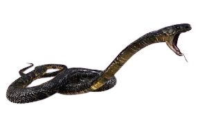
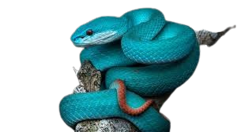
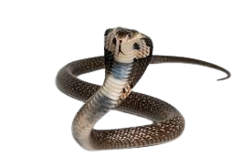

Ular adalah reptil melata berdarah dingin dengan tubuh panjang tanpa kaki, yang bergerak menggunakan sisiknya. Hewan ini bernapas dengan paru-paru dan memiliki lidah bercabang untuk mendeteksi bau. Beberapa ular berbisa, seperti kobra dan viper, menggunakan racun untuk melumpuhkan mangsa, sementara lainnya, seperti piton, membunuh dengan cara melilit. Ular tersebar di berbagai habitat di seluruh dunia kecuali Antartika dan memiliki peran penting dalam ekosistem sebagai predator alami.
Ular piton (Python) adalah salah satu jenis ular tidak berbisa yang terkenal dengan ukurannya yang besar dan kemampuannya melilit mangsa hingga kehabisan napas sebelum menelannya utuh. Ular ini termasuk dalam keluarga Pythonidae dan ditemukan di berbagai wilayah tropis, seperti Asia, Afrika, dan Australia. Beberapa spesies piton, seperti piton reticulatus (Malayopython reticulatus), dapat tumbuh hingga lebih dari 7 meter, menjadikannya salah satu ular terpanjang di dunia. Meskipun ukurannya besar, piton bukanlah ancaman bagi manusia kecuali dalam situasi tertentu. Ular ini biasanya memangsa mamalia kecil, burung, dan reptil lain. Beberapa spesies piton juga dipelihara sebagai hewan eksotis karena pola sisiknya yang menarik dan perilakunya yang relatif tenang jika sudah terbiasa dengan manusia.
Ular viper (Viperidae) adalah keluarga ular berbisa yang dikenal karena taringnya yang panjang dan bisa melipat ke belakang saat tidak digunakan. Ular ini memiliki racun yang kuat, biasanya bersifat hemotoksin, yang dapat merusak jaringan dan mengganggu pembekuan darah pada mangsanya. Viper dapat ditemukan di berbagai habitat di seluruh dunia, kecuali Australia dan Antartika, dengan spesies terkenal seperti ular beludak (pit viper), Gaboon viper, dan Russell’s viper. Ciri khas viper adalah tubuhnya yang kekar, kepala berbentuk segitiga, serta kemampuan menyerang dengan cepat dan akurat. Beberapa spesies, seperti viper berbisa di Amerika dan Asia, memiliki lubang sensor panas di dekat hidung yang membantu mereka mendeteksi mangsa berdarah panas bahkan dalam gelap. Meskipun berbahaya, ular viper memainkan peran penting dalam ekosistem sebagai pengendali populasi hewan pengerat.
Ular kobra (Naja) adalah jenis ular berbisa dari keluarga Elapidae yang terkenal dengan kemampuannya mengembangkan lehernya menjadi bentuk seperti tudung saat merasa terancam. Kobra tersebar di berbagai wilayah tropis, terutama di Asia dan Afrika, dengan beberapa spesies terkenal seperti kobra India (Naja naja), kobra kacamata, dan kobra raja (Ophiophagus hannah). Racun kobra umumnya bersifat neurotoksin, yang dapat melumpuhkan sistem saraf dan menyebabkan kelumpuhan pada mangsanya. Beberapa spesies, seperti kobra sembur, mampu menyemprotkan racunnya ke mata predator sebagai mekanisme pertahanan. Meskipun berbisa dan berbahaya, kobra jarang menyerang manusia kecuali merasa terancam. Ular ini memiliki peran penting dalam ekosistem sebagai pengendali populasi hewan pengerat dan sering dikaitkan dengan mitologi serta budaya di berbagai negara.